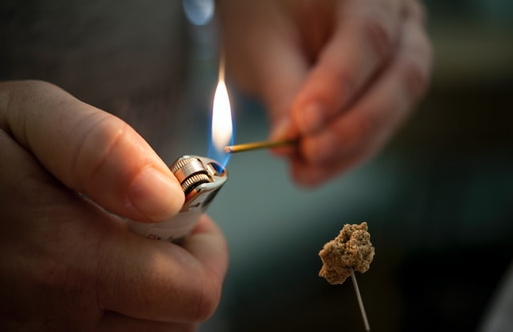

TuiNa (in Chinese 推拿 tūiná, from 推 tūi, “to push” and 拿 ná, “to grasp”) is the massage technique at the base of Traditional Chinese Medicine. It consists of a series of manual techniques aimed at obtaining certain results for the well-being of the person. In the language of Chinese medicine, it serves to restore the correct circulation of Qi, the vital energy that flows in the human body through the energy meridians.
In recent years, TuiNa has experienced increasing popularity due to its effectiveness and its completeness. In fact, it provides a very wide range of maneuvers to be carried out in certain points and areas of the body, with different executive variants. Fingers, hands, but also forearms and elbows are used. There are other complementary techniques for achieving the result, Cupping, Moxibustion and Gua Sha.
Interesting fact: TuiNa was recognized by the WHO in 1998 and has an immediate effect on neck pain, back pain, back pain, lumbosciatica, epicondylitis, carpal tunnel, etc., as the person undergoing the treatment will immediately feel "unblocked" in movement and pain muffled.

Moxibustion
Moxa, literally "the burning herb" is the secret ally of every TuiNa operator.
The heat given off by the embers of an Artemisia cigar gives immediate relief to muscles and joints.
The substances naturally possessed by this herb penetrate through the skin, helping in case of various problems, such as anxiety, insomnia, cold symptoms, etc.
TuiNa holistic study of Luca Santoianni, Donota Street,1 - Trieste, VAT number 01340520327
Professional pursuant to Law no. 4/2013, registered with the OTTO Professional Association
Website created by Francesco Santoianni, 2022